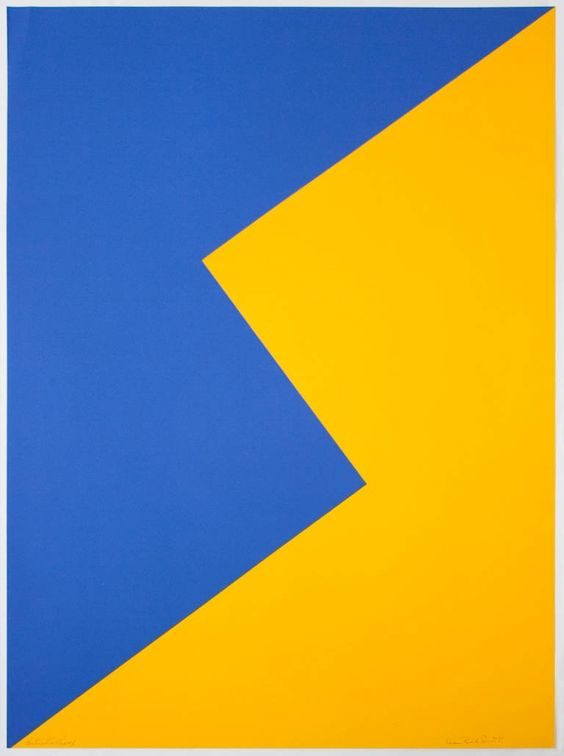
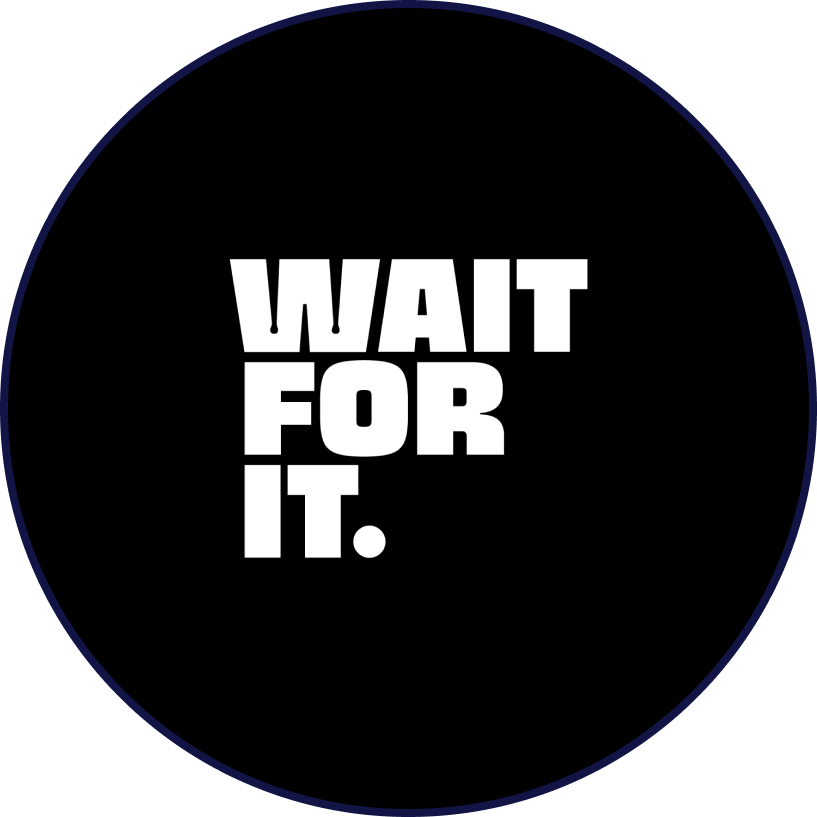

¡Hola! Soy Yudy
Soy una joven estudiante, creadora de contenido en redes sociales con habilidades blandas desarrolladas. Autodidacta, dinámica y disfruta de la interacción con las personas. Profesionalmente, diseñadora gráfica con 3 años de experiencia en diseño publicitario, editorial y branding. Experta en Adobe Creative Suite, y en sus tiempos libres disfruta la pintura y el dibujo. Ahora mismo me encuentro cursando el octavo ciclo de mi carrera.


¿Cómo escogí mi carrera?
Desde que era muy pequeña me llamó mucho la atención las formas y colores, me parecía y me resultaba muy interesante el ver como estas se combinaban para crear composiciones en cualquier espacio, ya se hablando de diseño de dibujos hasta diseño en interior. Me gusta mucho observar todo ello, y por ende también dibujar. Mi padre es un artista y gracias a él pude aprender varias técnicas de dibujo, lo que también me fui inspirando, motivando y llevando por el camino del arte mientras iba creciendo.
Así supe que quería estudiar diseño gráfico, y aunque al comienzo fue un poco tedioso convencer a mis padres de que quería estudiar ello, pude hacerlo gracias al apoyo de mi hermano que también estudia un carrera afin, él fue el que habló con mis padres para que pudieran dar el apoyo financiero y moral que ahora tengo. Estoy muy contenta y no pudo haber otra carrera más acertada para mí que esa, soy muy feliz con cada curso que llevo, con cada tarea que hago, con cada pequeño o grande trabajo que realizo, diseñar es mi pasión.
Mi emprendimiento
Desde niña, siempre me fascinaron los colores y las formas.
Tengo un negocio que se llama WAIT FOR IT, es sobre venta de ropa, inició en 2020, en pandemia. Al principio no creía que pudiera ser sostenible en el tiempo y llegó a ser mucho más que eso. Ha sido mi ingreso extra por estos 3 años y la marca ha ido creciendo de la mano conmigo, he aprendido demasiadas cosas.
Definitavemente el boom del negocio fue cuando comencé a hacer tiktoks para vender prendas con diseños originales de artistas, para conciertos en Lima. Recuerdo que iba vendiéndolas afuera del Estadio Nacional y mucha gente me compraba, me sentí muy feliz porque gracias a eso pude comprarme mi iPad, al igual que mi escritorio regulable y demás cosas que me ayudaron a potenciar mi estilo de vida como diseñadora y a perfeccionar mi modo de trabajo, pues el ipad me hizo ahorrar tiempo en vez de bocetear a mano y el escritorio me ayudó con los problemas de espalda que tenía.
Mis habilidades blandas
- Escucha activa
- Comunicación asertiva
- Trabajo en equipo
- Toma de decisiones
- Organización del tiempo
Mis habilidades técnicas
- Branding
- Identidad visual
- Packaging
- Redes sociales
- Community managmment
Programas de diseño
- Figma
- Adobe Indesign
- Adobe Photoshop
- Adobe Illustrator
- Adobe Premiere Pro